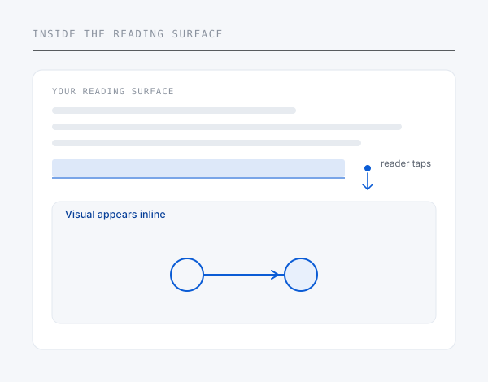

Integration
What embedding this involves.
Written for the person who has to scope the work. It describes what changes on your side, what does not, and what stage the work is actually at.

Status first
Proof of concept · not a productised SDK
There is no drop-in package today.
What exists is a working prototype and an implemented proof of concept in one domain. A first deployment would be scoped engineering work done jointly, not an integration against a documented public API.
That is stated here rather than discovered in a technical call, because scoping a pilot on a false premise wastes more of your time than mine.
Where it sits
A layer inside the reading surface.
The augmentation lives in the reading application, not in the content. A reader selects a passage, and a visual is returned and rendered beneath it. Your files, your formats and your distribution pipeline are untouched.
That is the property that makes back catalogue viable: titles already published and already distributed work without being reopened.
Device level
Inside the reading software on a device
Application level
Inside a publisher's own reading product
Platform level
Once, across every catalogue on the platform
What it does not require
Nothing changes in your content operation.
| Content files | Unmodified. No re-authoring, no re-export |
| Editorial production | No new production cycle, no new asset commissioning |
| Distribution | Existing formats through existing pipelines |
| Reading interface | Uses the text selection behaviour already present |
| Reader experience | Nothing appears unless the reader asks for it |
Editorial control
You decide what a reader sees.
A pilot can be structured so that every visual is queued for editorial review before any reader encounters it, with your domain experts approving, rejecting or amending each output. Nothing has to reach a reader unreviewed.
Scope can be narrowed deliberately — by domain, by imprint, by title, or by field of use — so a first deployment is bounded and measurable rather than open-ended.
What comes back
A pilot produces evidence, not just a feature.
Passage-level engagement data — which passages readers choose to augment, dwell time, whether they return to the text — is an output of any deployment, and it is data publishers do not currently collect.
A pilot is also the natural place to answer whether this improves comprehension at all.